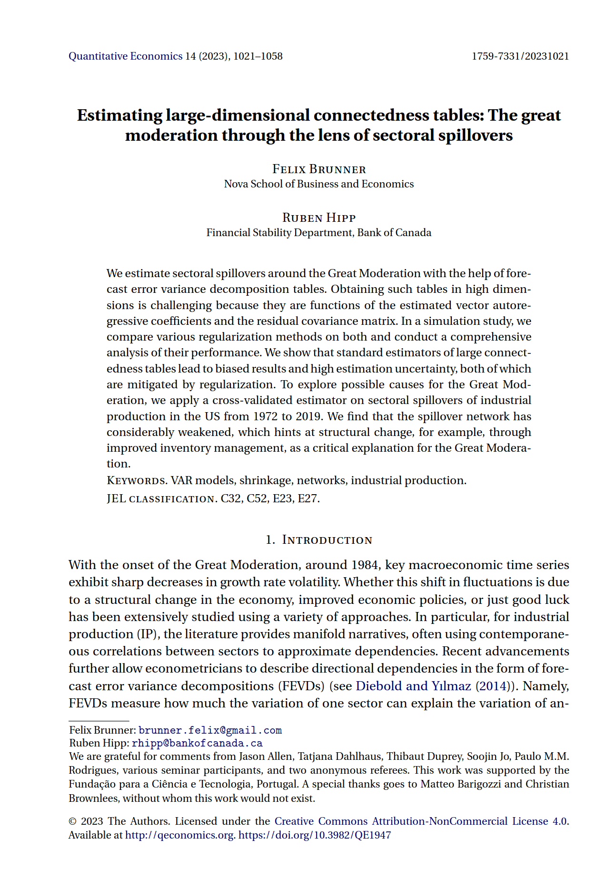

I am happy to announce that a paper of Ruben Hipp and I has recently been published in Quantitative Economics. The published version can be downloaded here. We investigate the applicability of regularized estimators in the context of network estimation from timeseries data. We find that such methods outperform classical approaches in terms of both bias and variance, and apply an estimators to sectoral production spillovers. Given our estimates, we collect new evidence on possible reassons for the decline in macroeconomic volatility after the mid-1980s connected to a lessening spillover network.
